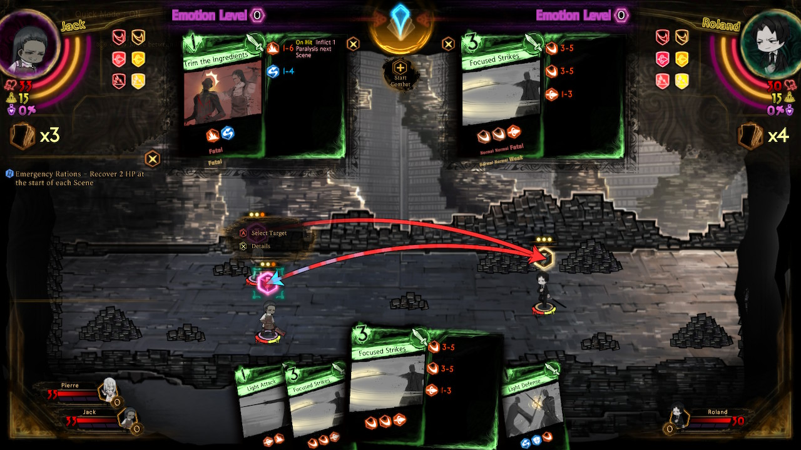
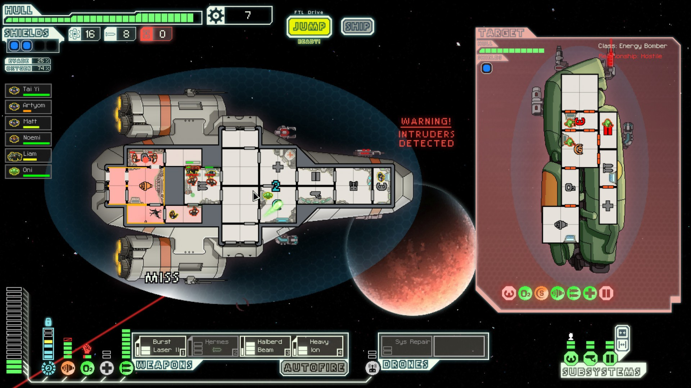
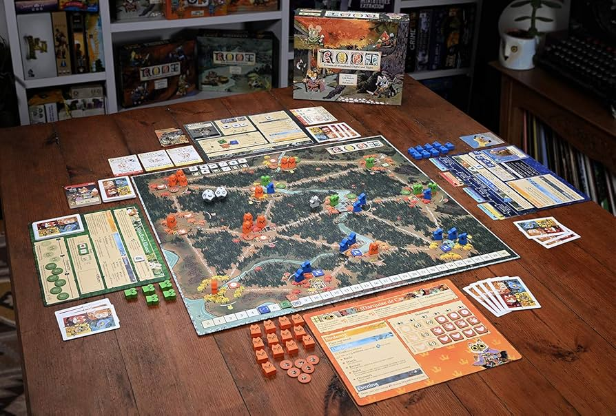

Background
My interest with computers started back in my childhood. From my childhood until now, I was obsessed with games. Back then when I had the free time, I tried my best to squeeze out as much time playing them. As I grew older I wanted to understand how people created games and how video games in particular work. To me the knowledge of how images are displayed on a screen, how computers know how to read inputs, and how programs work was still a complete mystery to me. So, as I went through High School at Westford academy, I took an AP CS course and our first big project was to create a video game in a small team of two to three people. My teammate and I both wanted to recreate “Magic the Gathering”, but our CS teacher with his years of experience in the world of “Magic the Gathering” strongly warned us that this was a terrible idea. In our hubris we went with the idea anyways and after pouring through the many, many, many, rules of this game we switched over to a simpler game, chess. My teammate and I spent about a week hammering out how we were going to split up the work and how the game was going to be programmed. I was tasked to design, program, and test the code that represents the logic, state, and actions of the game. Designing the logic and the action of how this game works through code proved to be quite the endeavor. We had to figure out how to represent a board game in code that was able to do certain actions like moving a piece, preventing movement of a piece if the king is in check, how to determine the king is in checkmate, etc. But I had a lot of fun and restless nights creating this program and we got complimented by how well our game worked by our teacher when we presented our game to the class. After this assignment, I decided I wanted to pursue computer science in college and got bachelors degree in computer science in University of Massachusetts Lowell from 2022-2024 and pursuing master degree in 2025-Present day.
Fields of interest
Databases: SQL is one of the easier languages to learn in the field of CS. It’s easy to see how useful each feature in SQL is to do something impactful. Also, making E/R diagrams can be fun, because it is comparable to trying to fit together puzzle pieces but in a way with the least amount of pieces used to make a picture look nice. Though if there is one gripe I have is that maintaining data integrity is really tough.
Data communication: Protocols everywhere. I adore this subject because I still can’t believe the sheer amount of protocols and layers needed to send bits from one location to another.
Favorite games
Library of Ruina
The video game is a deck builder rpg game with an emphasis on story. I love this game for its story and setting takes inspiration from the tragedies and weirdness of the laws of certain governments and the action of corporations in that government in the real world, but twists them in such a way to show how horrifying they can be.
FTL
A rogue like top down space ship management and space ship combat video game. When you first start off in this game it seems quite simple at first. But run after run you start to learn there are a lot of little mechanics that heavily impact how you play the game. For example doors. Doors at first glance seem to be only good at keeping intruders out from key rooms on the space ships. But you learn doors can do so much more. You can use them to route intruders into certain rooms, suffocate intruders, put out fires, and much more when you start to add other mechanics in the game, like mind control and hacking.
Root
A war and strategy board game where each player interacts with a common set of rules in different ways depending on what factions they choose. For example the player can control the cats and have three points they can spend taking the common actions: recruit, move, battle, and build. While the birds are able to do the same actions but in different ways. Birds can slot in one to two cards into recruit, move, battle, or build. The birds then take those actions in order while trying to play all cards in that action, if they are unable to then they lose all of their cards in each action and have to start from scratch.